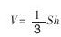
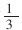
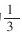

浅谈小学数学教学与落实素质教育 [1]
《中国教育改革和发展纲要》指出：“教育改革和发展的根本目的是提高全民族的素质，多出人才，出好人才。”小学数学，作为义务教育的一门重要学科，无疑肩负着提高全民族素质，为培养适合现代化建设所需要的各级各类合格人才打基础的任务。因此，“从小给学生打好数学的初步基础，发展思维能力，培养学习数学的兴趣，养成良好的学习习惯，对于贯彻德智体全面发展的教育方针，培养有理想、有道德、有文化、有纪律的社会主义公民，提高全民族的素质，具有十分重要的意义”。
纵观当前小学数学教学，由于有些教师对素质教育缺乏应有的认识，在教学中仍存在着重知识传授轻能力培养、重教学结果轻教学过程、重优生轻差生等现象；有的教师仍习惯自己唱“独角戏”，不能充分调动学生学习的积极性和主动性，使课堂教学缺乏生机和活力；有的学校师生仍沉在“苦教”“苦学”的困境之中……针对这种情况，很有必要认真学习《九年义务教育全日制小学数学大纲（试用）》（以下简称新大纲），明确小学数学教学的指导思想，正确处理“智育与德育、知识与能力、理论与实际、教与学、面向全体学生和因材施教的关系，充分调动学生学习的积极性和主动性，使学生在掌握知识的同时，智力得到发展，能力得到提高，并受到思想品德教育”。
下面结合小学数学教学任务，重点从四个方面谈谈小学数学教学与落实素质教育的粗浅认识：
一、激发学生学习数学的兴趣是落实素质教育的前提
“学习兴趣是人对学习的一种认识倾向，它是由需要所引起的一种情绪反应，对学习具有明显的增效性。”心理学研究表明：儿童喜欢在轻松愉快、无忧无虑的情境中学习，情绪越好，学习效果就越佳，情绪好坏是与学习效果成正比例的。因此，作为教师，不仅要考虑学生“学什么”的问题，更要考虑“怎样学”的问题，尤其要考虑学生怎样才能“乐学”的问题。
教学成效显著的教师，都十分重视激发学生学习的兴趣，他们根据不同的年级和不同的教学内容，采用了讲故事、做游戏、放音乐、组织活动、创设教学情境等不同的教学形式。有位教师在讲圆锥体的体积公式

时，故设认知矛盾激发学生的兴趣，他是这样设计教学程序的：首先按照教材编排，用等底等高的圆锥和圆柱容器，让学生量黄沙，做实验，然后让学生表述圆锥和圆柱的体积关系，几乎所有学生都异口同声地说：“圆锥体积是圆柱体积的
，圆柱体积是圆锥体积的3倍。”这时，教师把学生自己得出的结论写在黑板上，接着又让学生用底、高不相等的圆锥和圆柱容器做第二轮实验。结果，根本不是1比3的关系，这就推翻了学生自己原先得到的结论。这是怎么回事呢？这时，教师让学生带着疑问，仔细观察几次实验用的圆锥和圆柱容器，认真思考，寻找原因，学生终于发现：一定要在等底等高的条件下：圆锥体体积才是圆柱体积的
，圆柱体积才是圆锥体积的3倍。于是教师用彩色粉笔把学生得出的原结论补充完整，突出了“等底等高”这个必要条件，学生在实验中得出结论，又在实验中否定结论，最后在思考中完善结论，经历了“肯定—否定—肯定”的实践与思维的过程，这样既培养了学生探索知识的兴趣和能力，又使学生获得了扎实的基础知识。有的教师还通过数学知识的实际应用来激发学生学习的兴趣。如，学习了百分数以后，让学生进行种子发芽实验，学习了纳税和利息以后，让学生到社会上作些实际调查，学习了长方形和正方形的面积以后，让学生回家去帮助父母测量并计算出房间地面的面积，计算出装修房间地面所需地砖数及购买地砖的钱数等，使学生切身感受到生活中处处有数学，处处要用数学，让学生在学、用结合中，认识自身价值，增强学习信心，学好数学。无论教师采取什么形式，目的是促使学生形成一种乐学的心理，让学生带着强烈的情绪，主动积极地投入到教学活动之中。学生一旦对学习产生了兴趣，将达到乐此不疲、废寝忘食的地步。那时，教学就变成为“我”的自身需要，完全摆脱了被动应付的状态。探究的乐趣，也不仅仅属于少数拔尖学生，而是属于全体学生。这不正是素质教育所需要的吗？所以，落实素质教育，激发学生的学习兴趣是前提。
二、掌握一定的数学基础知识是落实素质教育的根基
“众所周知，一个人的素质是由多方面的要素结合构成的。素质水平的高低与知识水平有密切的关系”。一般来讲，无知也就无能。因此，教师都比较重视基础知识教学。从现代教学论的观点看，教学过程既是学生的认知过程，又是学生的初步发展过程。所以加强基础知识教学，从小给学生打好数学的初步基础必须注意两点：一是要按照儿童的认知规律（即：动作、感知→表象→概念、符号）进行教学。二是要根据学生实际，处理好传授知识与培养能力的关系。只有这样，才能使学生的知识与能力同步发展，才能为落实素质教育奠定基础。
三、培养学生数学能力是落实素质教育的核心
“数学能力本身是一个复杂的整体结构，它指的是一个人那些有利于迅速而容易地完成数学活动的独特的心理特征。”在小学阶段，数学能力主要是计算能力，初步的逻辑思维能力和空间观念。在以往的教学中，教师都比较重视学生计算能力的培养，抓得比较实，而对培养学生初步的逻辑思维能力和空间观念的意识不够强，忽视了运算能力的核心是思维这一科学事实，结果使学生不能很好的运用数学思维方法去分析问题和解决问题，明显地表现出了数学技能素质较差。
小学数学教学培养学生初步的逻辑思维能力，主要是“结合有关内容的教学，培养学生进行初步的分析、综合、比较、抽象、概括，对简单的问题进行判断、推理，逐步学会有条理、有根据地思考问题，同时注意思维的敏捷和灵活”。培养学生初步的逻辑思维能力，一是要结合教学内容，有意识地进行。如：一位教师是这样设计“除法的初步认识”的教学程序的：先让学生分小棒，“每人拿出8根小棒，把它们分成两个部分，怎么分都行”。于是大家全神贯注的分起来了，教师随即把他们的不同分法写在黑板上：（1）分成5和3；（2）分成6和2；（3）分成7和1；（4）分成4和4。启发大家观察：看看他们分得对不对？这四种分法有什么相同？有什么不同？“通过比较，同学们发现相同的都是按照老师的要求分成两部分，不同的是前三种分法，两部分都不一样多，后一种分法每部分都是4根，这时，教师指着第四种分法说：“把8根小棒分成两部分，每部分同样多，这样的分法叫做平均分。”然后又带领学生把6根小棒平均分成3份；把10根小棒平均分成2份……这样，问题从实际生活引入，从“任意分”到“平均分”，由一般到特殊，通过学生自己的实际操作，观察、分析、综合、比较，既使他们初步掌握了除法的意义，又有意识地培养了他们的思维能力，这就符合新大纲的基本精神。二是要目的明确。如：有位教师在教学“加法的交换率”时，是按以下步骤显示逻辑思维程序和思维方法的：
第一步：通过学生计算例1看到137+357=357+137
第二步：让学生观察18+17〇17+18和124+235〇235+124这两组算式蕴涵的同一性和相似性，教师设问诱导：等号左边、右边几个数相加？（两个数）加数位置起什么变化？（交换了加数的位置）它们的和有没有变化？（它们的和不变）〇里应填什么？（等号）
第三步：组织学生讨论，说说你发现了什么规律？你能得出什么结论？
第四步：归纳成结论，即：“两个数相加，交换加数的位置，它们的和不变”。
最后还可以让学生验证这一结论。这样完整的教学序列：整理材料→观察求同→提出猜想→归纳结论，导向性十分明显，目的是引导学生“有条理的进行思考，比较完整地叙述思考过程”。三是要注意学以致用。数学思维方法是学生分析、研究和解决数学问题的有力武器，学生只要掌握了逻辑思维的基本方法，就可以分析、解决数学中的一些实际问题。如：学习了乘数是两位数的乘法以后，就可以通过类推迁移学习乘数是三位数的乘法；学习了个级和万级数的读写以后，就能类推出亿级数的读写；学习了九加几、八加几就能推导出七加几……由除法商不变性质推断出分数、小数和比的基本性质。又如：由长方形面积公式，推出平行四边形面积公式，三角形、梯形亦可用割补法转化为平行四边形，又从平行四边形面积公式推出三角形、梯形面积等。
“应用题教学是培养学生解决简单的实际问题和发展思维的重要方面。要注意联系学生的生活实际，引导学生分析数量关系，掌握解题思路”。例如，低年级教学求两数相差多少的应用题，要通过摆学具使学生逐步弄清较大的数可以分成两部分，一部分是和较小的数一样多的，另一部分是比较小的数多的。这样，要求较大的数比较小的数多几，就要从较大的数中去掉和较小的数同样多的那部分，剩下的就是比较小的数多的，所以要用减法计算。【求比一个数多（或少）几的数的应用题，也通过操作进行类似的分析】。采取这种方法教学，符合儿童的认知规律，学生对应用题的数量关系清楚，就能正确地进行分析和解答。高年级教学应用题，教师要教给学生分析数量关系的一些基本方法，如分析法、综合法等，也要根据题目的特点使他们掌握一些转化、对应、比较、假设等特殊的方法，如把归一问题转化为分数应用题或比例应用题；通过假设把分数除法转化为分数乘法应用题等，还可以启发学生采用不同的解法，如用方程解和用算术方法解等。只有在课堂教学中教给学生数学思维方法，培养他们数学思维能力，才能使学生兴趣盎然，轻松自如的在数学领域之中探究，真正成为教学的主体，学习的主人。
数学是“思维的体操”。一个学生的思维能力程度，标志着他的素质水平，同时也直接制约着其获取知识技能的速度、广度和深度，影响着解决问题的质量、水平和效率。因此，培养小学生初步的逻辑思维能力，必须高度重视，长期培养和训练。
培养学生初步的空间观念，应充分利用和创造各种条件，引导学生通过对物体、模型等的观察、测量、拼摆、画图、制作和实验等活动，使学生逐步形成简单几何形体的形状、大小和相互位置关系的表象，能够识别所学的几何形体，并能根据几何形体的名称再现它们的表象，把培养学生初步的空间观念落到实处。
四、培养学生良好的学习习惯是落实素质教育的保证
“学习是动力定型，是由重复或练习巩固下来并变为需要的行为方式”。小学阶段是儿童形成各种习惯的关键时期，培养学生良好的学习习惯，会对学生一生产生重要影响。因此，有计划、有目的的培养学生良好的学习习惯，不仅是教学任务的一项重要内容，也是落实素质教育的保证。
在教学过程中，许多老师往往只重视培养学生良好学习习惯的明显要求，如培养学生“认真做题、计算正确、书写整洁的良好习惯”，“检查和验算的习惯”，“遵守和爱惜时间的良好习惯”等，却不注重挖掘教材中隐含的培养学生良好学习习惯的一些要求。如：通过说理训练，培养学生良好的表达习惯；通过有条理、有根据的逻辑推理，培养学生良好的思维习惯；通过解答应用题，培养学生良好的分析和审题习惯；通过遇事“想一想”，多问几个“为什么”，培养学生良好的求异和质疑问难的习惯；通过知识的归类、整理，培养学生善于组建良好的认知结构的习惯；通过自测、自查培养学生自我评价的习惯；通过激发兴趣，培养学生乐学和主动探索求知的习惯等。
小学生学习习惯容易养成，但也容易改变。因此，教学时必须有意识的结合教学内容进行，并要坚持不懈，一抓到底。实践证明，没有克服不了的习惯，没有教育不好的学生。只要教育方法得当，因材施教，成效就一定会显示出来的。学生有了良好的学习习惯，终身受益无穷。
“儿童的天地是五彩缤纷的，与单调、刻板不相容；儿童的生活是欢乐活泼的，与枯燥、乏味更无缘”。因此，在教学中必须根据学生的心理特点和认知规律组织教学，既注重知识的获得过程，又注意兴趣、习惯等非智力因素的培养，只有这样，才能把素质教育落到实处。
小学数学教学要全面完成教学任务，落实素质教育，要求教师必须更新教学观念，确立教学就是为了有效地提高学生各种素质的教学思想。首先要热爱自己所从事的事业，热爱学生，要以自己的语言、表情、动作、体态感染学生、影响学生，以自己的激情唤起学生对数学的爱与追求。其次要潜心钻研教材，掌握教材的知识结构体系，并结合学生实际恰当地处理教材。再次要研究教法，研究学法，要善于创设教学情境，激励学生动口、动手、动脑，多种感官参与教学活动。要信任他们，挖掘他们的内在潜力，激起他们智慧的火花，营造学生“乐学”“会学”的氛围……由于时代在前进，形势在发展，教师只有不断提高自身素质，才能适应社会的需求，适应教育改革的需求，才能达到提高全民族素质，多出人才，出好人才的目的。